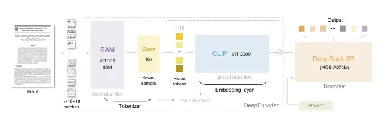

DeepSeek recently released DeepSeek-OCR, the research paper of it focuses on vision text compression, the model can decode thousands of text tokens from few hundred vision tokens. I wanted to test this, so I set up a small Colab pipeline to see how well it works.
DeepSeek-OCR
It's an end-to-end model built around a custom DeepEncoder plus a MoE-based decoder and is designed to compress visual input aggressively while keeping text reconstruction accurate.
From the paper's experiments, the model can hit around 97% precision at about 10× vision-text compression, which is pretty wild for an OCR system.
Below is my approach used:
Setting Up the Environment in Colab
dependencies used:
- transformers for loading the DeepSeek model
- bitsandbytes for quantization
- pdf2image + poppler to turn pdf pages into images
Here's the installation block:
!pip install addict transformers==4.46.3 tokenizers==0.20.3 pdf2image
!pip install --no-deps -q bitsandbytes
!apt install poppler-utilsI quantized the model using 4-bit NF4 to keep it lightweight making it useful on Colab T4 and even more so on A100 sessions.
Converting the PDF into Page Images
from pdf2image import convert_from_pathcreating directories for the pdf and for output pages:
import os
os.makedirs("outputs", exist_ok=True)
os.makedirs("pdf_pages", exist_ok=True)then creating a variable for the pdf and convert the pdf pages to images and store it in the pdf_pages directory.
pdf_file = 'csc.pdf'
images = convert_from_path(pdf_file)
for i, image in enumerate(images):
image.save(f'/content/pdf_pages/page_{i+1}.jpg', 'JPEG')Loading the DeepSeek-OCR Model
The model loads directly via Hugging Face with trust_remote_code=True since DeepSeek
ships a custom infer() function, also then quantize the model to 4-bit
configuration, also going forward colab will map the model into the CPU or GPU as per
availability.
from transformers import AutoModel, AutoTokenizer, BitsAndBytesConfig
model_name = 'deepseek-ai/DeepSeek-OCR'
quantconfig = BitsAndBytesConfig(
load_in_4bit=True,
bnb_4bit_use_double_quant=True,
bnb_4bit_quant_type="nf4",
bnb_4bit_compute_dtype=torch.float
)
tokenizer = AutoTokenizer.from_pretrained(model_name, trust_remote_code=True)
model = AutoModel.from_pretrained(
model_name,
trust_remote_code=True,
use_safetensors=True,
device_map="auto",
quantization_config=quantconfig,
torch_dtype=torch.float
)
model = model.eval()The paper mentions the model activates about 570M parameters at inference but because of MoE routing, running the model in 4-bit is possible with colab.
Running OCR on a Page
page_number = 3
prompt = "<image>\nParse the image."
image_file = f'/content/pdf_pages/page_{page_number}.jpg'
output_path = f'/content/outputs/page_{page_number}'Using infer() the image preprocessing, resizing to resolution, passing vision
tokens, decoding the text and saving outputs is handled automatically, making the OCR-model with
zero custom post-processing.
trigger the model, and then the output is ready!:
model.infer(tokenizer, prompt=prompt, image_file=image_file, output_path = output_path, base_size = 1024, image_size = 1024, crop_mode=False, save_results = True, test_compress = True)also refer to the complete notebook implementation: https://colab.research.google.com/drive/1dLaxvsch-8yGG25CIeJOe_YfMwSOOaJS?usp=sharing
for deepseek-ocr paper:
[2510.18234]
DeepSeek-OCR: Contexts Optical Compression